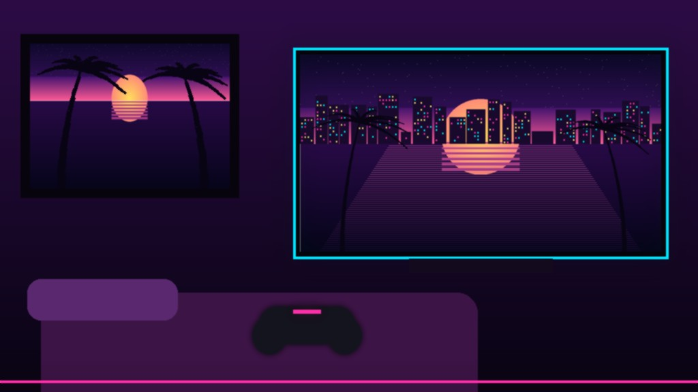

Performance
Which Console Runs GTA 6 Best? | Peekhole

Short answer: PS5 Pro. Digital Foundry found it holds GTA 6's 30fps target most consistently. Xbox Series X comes next and has a small edge over the base PS5 in fast driving. Series S trails the pack.
Is there a 60fps mode?
No. Every console targets 30fps, with no 40fps or 60fps option, according to Digital Foundry. It calls the cap a deliberate trade-off for the game's heavy simulation.
The quick ranking
- PS5 Pro: A near-locked 30fps in normal play, plus PSSR upscaling and extra ray tracing. Big explosions can briefly dip it to around 24fps.
- Xbox Series X: Usually 30fps with dips into the high 20s. Digital Foundry says it drops frames less often than base PS5 in fast driving. A 120Hz VRR setting on Xbox can make dips less noticeable.
- PS5: Mostly 30fps, but dips more often. PS5's VRR only kicks in above 48fps, so it doesn't help here.
- Series S: Often sits in the mid to high 20s, with bigger drops in heavy firefights.
Should you upgrade?
Only if those dips really bug you. Digital Foundry's John Linneman called the base PS5 dips "very minor," and every version is playable. Want 60fps? That likely means waiting for an official PC version, which Rockstar hasn't dated.
Sources
- Digital Foundry: GTA 6 PS5 vs PS5 Pro, Xbox Series X and Series S
- VGC: GTA 6 base PS5 performance analysis
- Wccftech: GTA VI runs better on Xbox Series X than PS5
Peekhole take: Thirty frames, three hundred palm trees, zero regrets. Unless you're on Series S during a grenade party.